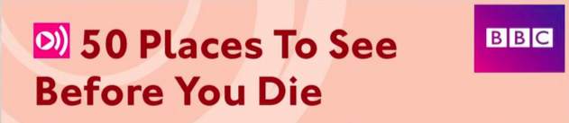

1. It's a romantic city with a lot of museums and art galleries.
2. There are beautiful views of mountains and beaches.
3. You can visit hundreds of temples and the shopping and the nightlife are great.
4. The colours change all the time. It's awesome!
5. It's a fantastic place to watch animals. You can see zebras, elephants, antelope, hippos and lions.
6. There's so much water all around you.
Which place do you think is number one?
There are so many wonderful places to see in the world. When the BBC asked people to choose their fifty favourite places, thousands of people answered. In this BBC programme we look at six of the places: Bangkok, Cape Town, the Grand Canyon, the Iguaçu Falls, the Masai Mara and Paris. Watch the programme and find out which is the number one place to see!
1. It's got lots of clubs, bars, shops, food. Everything you need/want, really.
2. I just love the wide, open/big spaces. The animals are amazing, and the people are so kind/warm and friendly.
3. You stand next to them and feel very, very small/little.
4. To me, Paris is elegant, romantic and expensive/exciting.
5. We went there over New Year ... Lovely, just a lovely, lovely place/town.
6. The colours are just so ... wonderful/amazing.
lovely (Oo) - amazing - wonderful - romantic - friendly - awesome - exciting - popular - interesting